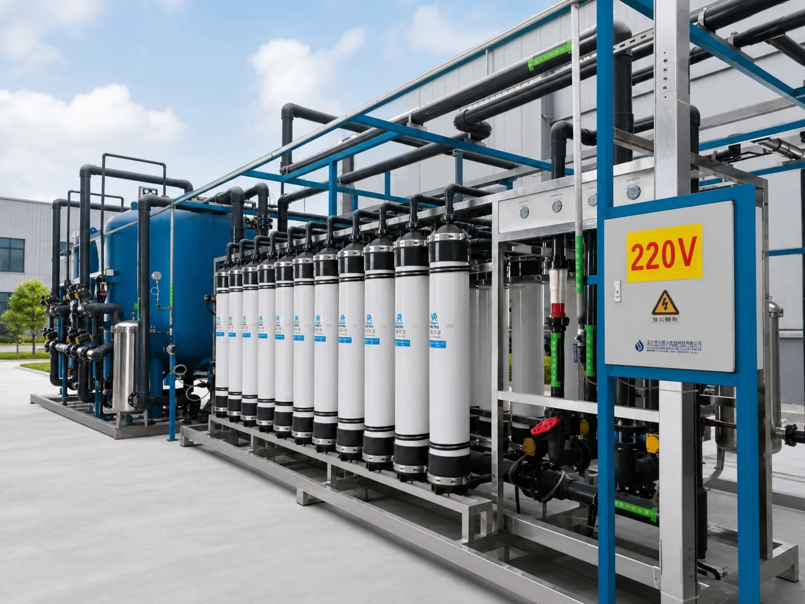
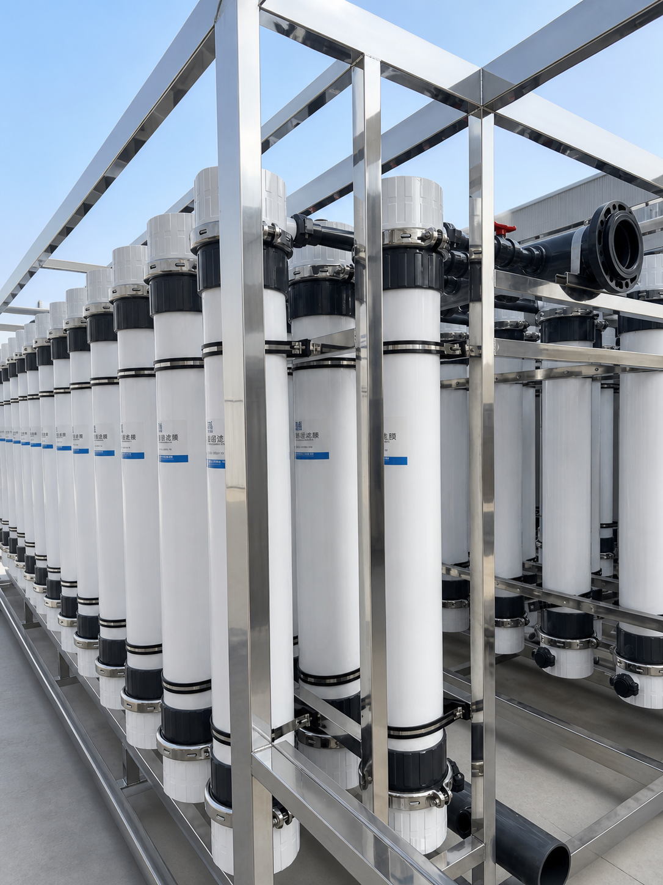

01
What it is
A UF system uses fine-pore PVDF hollow-fiber membranes — 0.01 μm nominal pore rating across 1–200 m³/h — to retain suspended solids, colloids, bacteria and larger organics while dissolved salts remain in the water.
Surface Water Filtration & Water Reuse
Konche UF ultrafiltration systems use membrane separation to remove suspended solids, colloids, particles and microorganisms. They support stable pretreatment, surface-water filtration and water reuse applications.
Discuss Your Requirement ↗
KONCHE ultrafiltration systems: 0.01 μm hollow-fiber membrane barriers at 1–200 m³/h — protecting RO trains and clarifying surface water, with a UF-versus-RO selection comparison.
Next step: Share your project inputs · Compare applications

UF systems can be specified for pretreatment, surface-water filtration and reclaimed-water reuse, helping reduce turbidity and particle loading before downstream treatment.
A UF system uses fine-pore PVDF hollow-fiber membranes — 0.01 μm nominal pore rating across 1–200 m³/h — to retain suspended solids, colloids, bacteria and larger organics while dissolved salts remain in the water.
Water passes through membrane modules; retained matter is removed by automatic water backwash, air scouring and periodic chemical-enhanced backwash, with online monitoring of flux and turbidity.
Surface-water treatment, industrial pretreatment, RO protection, municipal upgrades, drinking-water purification, food and beverage process water, and water reuse.
The 0.01 μm barrier lowers turbidity and SDI before RO, protecting downstream membranes and extending cleaning intervals; for reclaimed-water reuse it provides a reliable filtration stage before further treatment.
A low-pressure process at 0.1–0.3 MPa with typical electricity use of 0.3–0.7 kWh/m³, making UF a comparatively low-energy pressure membrane process.
Operating costs include backwash water and cleaning chemicals. UF membranes typically last 2–5 years; modular capacity design keeps expansion incremental.
PVDF hollow-fiber ultrafiltration with nominal 0.01 μm separation for RO pretreatment, surface-water clarification, drinking-water purification and industrial reuse. Typical capacity is 1–200 m³/h, with low operating pressure of 0.1–0.3 MPa.
An industrial ultrafiltration (UF) system is a low-pressure membrane barrier process. UF reduces suspended solids, colloids and microorganisms while most dissolved salts remain in the water. The linked KONCHE hollow-fiber UF page documents a 0.01 μm nominal pore rating across a 1–200 m³/h capacity range. Backwash and chemical-cleaning provisions protect flux and extend service intervals. UF is commonly applied before RO or in clarification and reuse processes. Documented benefits include RO membrane protection: lower turbidity and SDI before RO help extend cleaning intervals and membrane life. Membrane material, flux, filtration mode and cleaning regime are selected from the source-water variability and downstream requirement, because nominal pore size alone does not determine reliable performance across different waters. Documented applications include river, lake and reservoir clarification, food and beverage process water, drinking-water turbidity reduction and water reuse. Typical electricity use is 0.3–0.7 kWh/m³, and pressurized UF membranes generally serve for 2–5 years depending on feed-water quality, pretreatment performance and maintenance.
A hollow-fiber UF water treatment system is a low-pressure membrane barrier with nominal 0.01 μm pore size that removes suspended solids, colloids, bacteria and other particulates while retaining most dissolved salts. PVDF modules operate at 0.1–0.3 MPa in typical capacities of 1–200 m³/h, serving RO pretreatment, surface-water clarification, drinking-water purification and industrial water reuse. Outlet turbidity of ≤0.1 NTU, SDI ≤3 and bacteria removal up to 99.99% are documented for suitable conditions, with typical module service life of 2–5 years depending on feed-water quality, pretreatment performance and maintenance. Typical electricity use is 0.3–0.7 kWh/m³. Duties include RO membrane protection, where stable pretreatment extends downstream membrane life, and water-reuse polishing ahead of additional treatment. Backwash and chemical-cleaning regimes follow the source-water variability and the downstream requirement, and module integrity and flux are maintained by the documented cleaning schedules between services.
The membrane provides nominal 0.01 μm separation and high surface area in a compact module.
Typical operation at 0.1–0.3 MPa reduces energy demand compared with high-pressure membrane systems.
Backwash and air scouring reduce accumulated solids and support stable flux.
CEB or periodic chemical cleaning restores permeability when pressure or flow trends require it.
Lower turbidity and SDI help extend RO membrane cleaning intervals and improve system stability.
| Parameter | Value |
|---|---|
| Membrane pore reference | 0.01 μm |
| Capacity | 1–200 m³/h |
| Operating pressure | 0.1–0.3 MPa |
| Turbidity | ≤0.1 NTU in suitable conditions |
| SDI | ≤3 in suitable conditions |
| Bacteria removal | Up to 99.99% in suitable conditions |
| Membrane material | PVDF hollow fiber |
| Typical service life | 2–5 years |
| Model | Capacity | Typical application |
|---|---|---|
| KC-UF-1/5 | 1–5 m³/h | Small-scale purification and direct-drinking water treatment |
| KC-UF-10/30 | 10–30 m³/h | RO pretreatment and process water |
| KC-UF-50/100 | 50–100 m³/h | Water reuse and centralized supply |
| KC-UF-200 | 200 m³/h | Large pretreatment and reuse projects (customized) |
Reference model capacities and applications translated from the official KONCHE UF equipment page · Verified 24 August 2026
| Advantage | Customer benefit |
|---|---|
| RO membrane protection | Reduces suspended solids and colloids before RO and can extend RO cleaning intervals. |
| Water reuse | Provides a reliable filtration stage before additional treatment or reuse. |
| Low energy | Low-pressure operation supports economical continuous filtration. |
| Automatic cleaning | Backwash and air scouring reduce manual intervention. |
| Modular design | Capacity can be expanded around raw-water variation and downstream process needs. |
| Application | Value |
|---|---|
| RO pretreatment | Protects RO membranes and improves feed-water stability. |
| River, lake and reservoir water | Clarifies variable surface water after appropriate intake pretreatment. |
| Food and beverage | Provides stable filtration for process-water preparation. |
| Drinking water | Reduces turbidity and microorganisms before disinfection. |
| Water reuse | Supports reclaimed-water treatment and reuse before RO or final disinfection. |
| Item | Cycle | Maintenance |
|---|---|---|
| Pressure and flow check | Daily or every 1–3 days | Track transmembrane pressure, flux and turbidity trends. |
| Automatic backwash | Automatic | Configure backwash frequency around feed-water loading. |
| Chemical-enhanced backwash | Every 3–6 months | Use approved cleaning chemistry according to membrane fouling type. |
| Long shutdown | Before shutdown | Preserve the membrane module according to the manufacturer's procedure. |
| Membrane replacement | Typically 2–5 years, depending on feed water, pretreatment and maintenance | Replace based on irreversible permeability and water-quality decline. |
No. UF mainly removes suspended solids, colloids, particles and microorganisms. RO or another desalination process is required for dissolved salts.
UF can improve clarity and microbial control, but drinking-water projects normally add UV, RO or other treatment according to the source and standard.
UF and RO perform different functions. UF is often used as RO pretreatment or for clarification; RO is required when dissolved-salt reduction is needed.
Use source-water turbidity, SDI, flow, recovery, backwash demand and the downstream quality target.
Since 1997, Konche has accumulated practical experience across raw-water conditions, treatment processes and industrial project delivery.
Each system is designed around the water analysis, industry standard, site condition, capacity and final use.
Component selection, factory testing, water-quality verification and process control are managed as one complete system.
KONCHE supports proposal alignment, technical documentation, consumables supply, maintenance guidance and remote operational clarification.
Same-caliber comparison of the two membrane processes. Every value is a reference range documented on the linked product page and applies to the stated conditions, not a project guarantee.
| Comparison dimension | PVDF hollow-fiber ultrafiltration (UF) | Reverse osmosis (RO) |
|---|---|---|
| What it removes | Suspended solids, colloids, microorganisms | Dissolved salts 97–99% typical, plus organics and microorganisms |
| What passes or remains | Most dissolved salts remain in the water | Salts are rejected; a concentrate stream requires handling |
| Rating reference | 0.01 μm nominal pore | Permeate up to 10 μS/cm in a single pass |
| Capacity reference | 1–200 m³/h | 0.25–500 m³/h |
| Typical role | RO pretreatment, clarification, water reuse | Desalination and purification |
| Documented benefit and limitation | Protects RO membranes: lower turbidity and SDI extend cleaning intervals; does not desalinate | Removes dissolved salts to meet the standard; needs suitable pretreatment and recovery management |
| Choose when | The feed to RO must be stabilized, or solids and colloids define the problem | Dissolved salts must be removed to meet the product-water standard |
Decision guidance: UF protects; RO purifies. Most high-purity plants operate the two membranes in series: UF first stabilizes the feed and improves feed-water stability, RO then removes dissolved salts. KONCHE confirms the membrane pairing and recovery against the verified feed-water report.
Reference values verified against the linked product pages · Updated 24 August 2026
Contact Konche with your water source, raw-water turbidity and capacity requirement for a UF ultrafiltration system recommendation.
Get Expert Support ↗